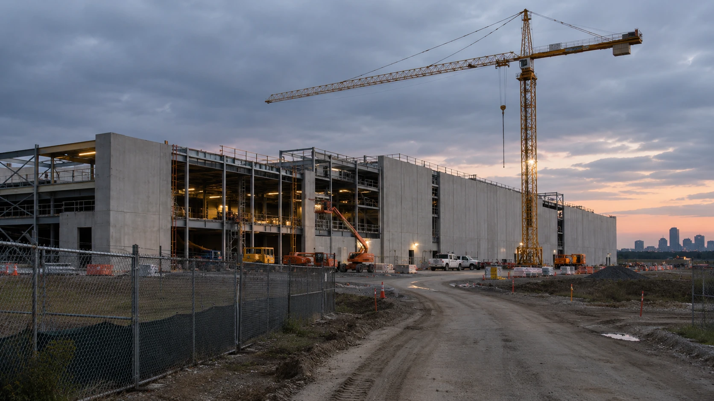

SoftBank's Mobile Arm Prepares for a Possible Slowdown in U.S. AI Data Center Demand
Bloomberg reports that SoftBank Corp. is weighing the effect of the midterm results and growing opposition to data centers on its U.S. neocloud plans, even as the company raised its full-year forecasts.

SoftBank Corp., the mobile arm of SoftBank Group, is preparing for a possible slowdown in U.S. AI data-center demand and may look elsewhere for growth, Bloomberg reported on Monday, November 9, in a story carried by Yahoo Finance. The report adds that the unit has been laying groundwork for U.S. neocloud operations and is assessing the effects of the recent midterm election results and rising opposition to data centers. Bloomberg's original reporting frames this as management preparing for a risk scenario, not a decision to cancel the venture.
What SoftBank Corp. has committed to
On July 2, SoftBank Corp. announced a U.S. neocloud venture called SB Neo, which it owns 51% and SoftBank Group owns 49%, according to SoftBank's earlier venture announcement as described in coverage. Services are scheduled to launch in the fiscal year ending March 31, 2028. In that release, President and CEO Junichi Miyakawa said the company was partnering with SoftBank Group to develop the business. A neocloud is a provider that rents GPU computing capacity to AI developers.
The available Bloomberg reporting does not establish that SB Neo's schedule has changed or identify any new region selected instead. The report is therefore a signal about risk assessment, not a decision to cancel or delay.
The company's numbers
SoftBank Corp. reported its July–September earnings on Monday in Tokyo, according to its official investor materials. In its official earnings commentary, SoftBank Corp. reported first-half revenue of ¥3,798.7 billion, up 12% from a year earlier, operating income of ¥642.1 billion, up 2%, and net income of ¥364.5 billion, up 5%. The company also said it had revised its full-year outlook upward, partly reflecting the sale of SB Energy. Within the Enterprise segment, revenue from Cloud & AI services, including AI computing infrastructure, climbed 37% year on year; overall Enterprise operating income rose 20%. These are reported operating results, not evidence that a U.S. data-center project has been canceled.
SoftBank Group, the parent, reports its own quarterly results on Tuesday, November 10.
Why midterms and local opposition matter
Democrats won both chambers of Congress last week, and market commentary has linked part of the chip selloff to fears of tighter rules on AI data centers, as covered in our report on Democratic AI bills. The reports reviewed do not point to a scheduled vote on any specific data center measure. Any link between the election and new rules is an expectation.
Opposition to data center construction also appears outside the United States. The debate extends beyond the United States because electricity access, planning rules and local infrastructure constraints affect large campuses in numerous markets. The electricity constraints behind such pauses are explained in our data center power primer.
The financing backdrop
AI infrastructure depends on external financing. Reuters reported on Monday that investors are questioning the future of Nvidia's chief executive after an internal company investigation, and Nvidia fell just over 4% in premarket trading, as covered in our Nvidia report. Chip equipment shares in Europe, including ASML and Aixtron, were volatile after sharp declines last week, according to Reuters.
This week CoreWeave, Cisco, Applied Materials and Nebius report earnings, according to a TipRanks update. They will show whether demand and financing for AI capacity are holding up. Background on how companies fund AI buildouts is in our capital financing explainer.
What the report does and does not show
Bloomberg's headline is about preparation for a possible slowdown, and the wording is conditional. It does not report a fall in orders, a canceled contract or lower capital spending at SoftBank Corp. At the same time, the company raised its annual outlook and reported 37% growth in Cloud & AI revenue. Both facts can be true at once, since forecasts reflect current contracts while the Bloomberg report concerns the outlook for new U.S. capacity.
The distinction matters to the broader AI infrastructure debate. Existing contracted demand can support current revenue growth even as developers reconsider the next wave of capacity. A slower buildout could change equipment orders, power commitments and financing needs over time, but no such cut has been announced here.
What to watch
The first marker is SoftBank Group's results on Tuesday and whether management comments on U.S. data center plans. The second is any update from SoftBank Corp. on SB Neo timing. The third is whether other operators pause or defer capacity, in the United States or abroad. The fourth is the CoreWeave and Nebius earnings this week.
Limits of the reporting
Bloomberg's report, carried by Yahoo Finance, supports the conditional demand-risk assessment. SoftBank's official earnings materials support the company's operating figures. Neither source establishes a canceled U.S. facility, a reduction in contractual GPU orders or a revised capital-spending commitment. This article is not investment advice.